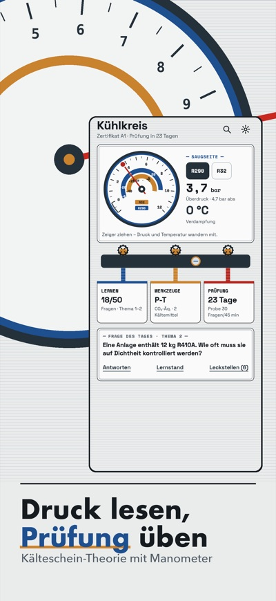
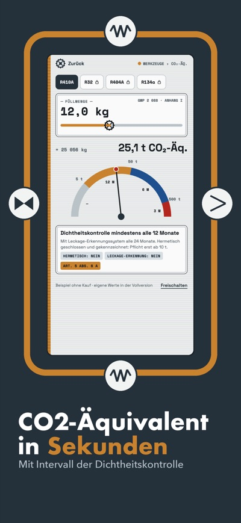
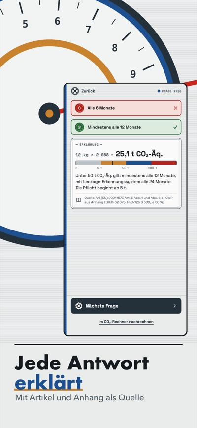

Sachkunde Kältemittel A1 bis E
Kühlkreis bereitet dich auf die Sachkunde für Kältemittel vor – gegliedert wie Anhang I der Verordnung (EU) 2024/2215: Recht und Thermodynamik, Umwelt und GWP, Dichtheitskontrolle, Rückgewinnung, Komponenten des Kältekreises sowie Kohlenwasserstoffe, CO₂ und Ammoniak. Wähle dein Zertifikat und übe genau das, was dazugehört.



Kühlkreis ist eine unabhängige Lern-App, mit keiner Behörde und keiner Prüfstelle verbunden, und stellt keine Zertifikate aus.
Bald im App Store